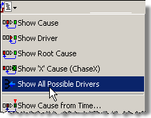
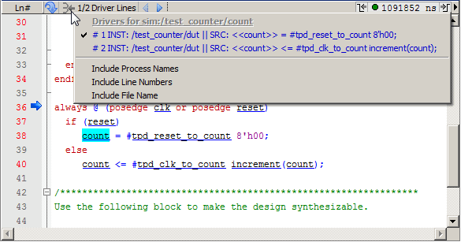

You can find
and display all possible driving assignments of a selected signal.
Prerequisites
Run the simulation.
Procedure
- Select a signal of interest
in the Wave window or Source window.
- Click and hold the Event
Traceback button until the drop-down menu appears.
- Select Show All
Possible Drivers from the drop-down menu (Figure 1).
Figure 1. Show All Possible
Drivers Menu Selection
This action displays all possible
driving assignments of the selected signal (Figure 2) in the Source window’s Show Drivers
Control Bar, without regard to the time of any particular signal
event. Refer to Multiple Drivers for more information.
Figure 2. Possible Drivers in
the Source Window
- The Transcript window displays
the command line equivalent of the GUI actions:
find drivers -possible <signal>
- The -possible switch for the find drivers command initiates the search for all possible driving
assignments of the selected signal.